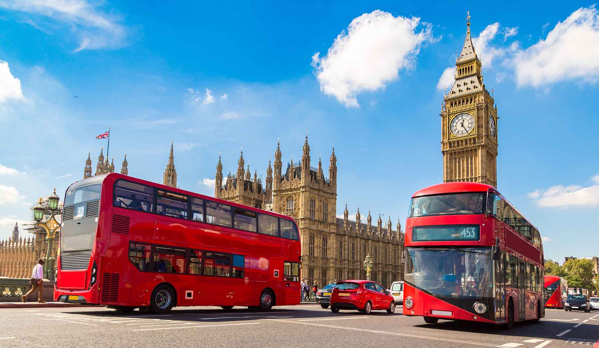
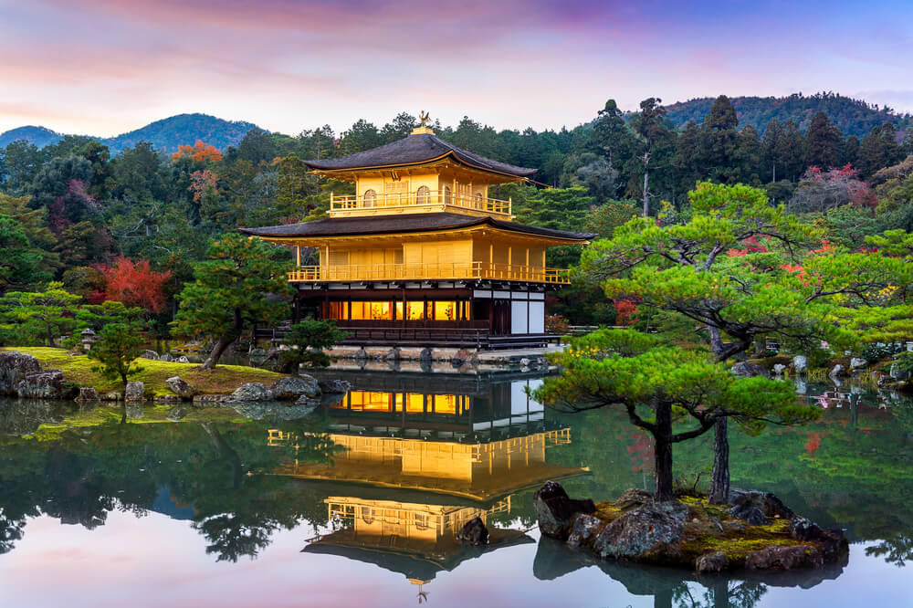
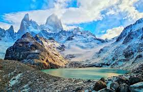

Aprenda mais sobre os destinos mais famosos da Europa
Veneza

Veneza, a icônica cidade italiana, é uma joia arquitetônica situada
sobre uma rede de canais serpenteantes no nordeste do país. Famosa
por sua rica história, arte e arquitetura renascentista, Veneza
encanta visitantes com suas majestosas praças, pontes elegantes e
edifícios de contos de fadas. A cidade é amplamente reconhecida por
marcos emblemáticos como a Praça de São Marcos, com a deslumbrante
Basílica de São Marcos e o Palácio Ducal, que testemunham a
grandiosidade da República de Veneza. A ausência de estradas,
substituídas por sinuosos canais onde gôndolas e barcos são os
principais meios de transporte, confere a Veneza uma atmosfera única
e romântica. No entanto, a cidade enfrenta desafios relacionados à
elevação do nível do mar e ao turismo intenso, que suscitam debates
sobre a preservação de sua beleza histórica e o equilíbrio com a
modernidade.
Londres

Londres, a cativante capital do Reino Unido, é uma metrópole
dinâmica impregnada de história e diversidade. Lar de marcos
icônicos como o imponente Big Ben, o imemorial Palácio de Buckingham
e a emblemática Tower Bridge, a cidade mescla harmoniosamente a
herança real com uma atmosfera cosmopolita. Os famosos museus, como
o British Museum e a National Gallery, abrigam tesouros culturais de
renome mundial. Os bairros pitorescos, como Notting Hill e Camden,
oferecem uma mistura eclética de lojas, mercados, restaurantes e
vida noturna. Londres também se destaca como um centro financeiro
global e polo de inovação, enquanto a London Eye e os teatros de
West End acrescentam um toque de encanto moderno a essa cidade
multifacetada.
Roma

Roma, a eterna cidade italiana, é um fascinante enclave histórico
que ressoa com os ecos do passado glorioso. Berço da civilização
romana, seus monumentos atemporais, como o Coliseu, o Fórum Romano e
o Pantheon, testemunham a grandiosidade do Império Romano. A Cidade
do Vaticano, enclave independente no coração de Roma, abriga a
imponente Basílica de São Pedro e os Museus Vaticanos, ricos em arte
sacra e renascentista, incluindo a famosa Capela Sistina de
Michelangelo. As pitorescas praças, como a Piazza Navona e a Piazza
di Spagna, oferecem charme e cultura em cada esquina. A gastronomia
italiana autêntica e os becos históricos conhecidos como "vicoli"
completam a experiência única de explorar essa cidade que é um
verdadeiro museu ao ar livre.
Dicas sobre viagens

Descobrindo Paris Além dos Cartões Postais
Paris é muito mais do que a Torre Eiffel e o Louvre. Para uma
experiência autêntica, reserve tempo para explorar bairros menos
turísticos. O Marais, por exemplo, oferece lojas da moda, galerias
de arte e pátios encantadores. Faça um piquenique às margens do
Canal Saint-Martin, onde os locais se reúnem para desfrutar da
tranquilidade. E não se esqueça de provar os deliciosos croissants e
macarons em autênticas pâtisseries locais, como a Du Pain et des
Idées. Paris está repleta de joias escondidas - basta se aventurar
fora do circuito turístico para descobri-las.

Imersão Cultural em Quioto, Japão
Quioto, a antiga capital do Japão, é um tesouro de cultura e
espiritualidade. Além dos famosos templos como Kinkaku-ji (Templo do
Pavilhão Dourado) e Fushimi Inari Taisha com seus corredores de
torii, explore bairros tradicionais como Gion, onde é possível
avistar autênticas gueixas. Não perca a cerimônia do chá em um dos
muitos salões especializados, mergulhando nas tradições milenares.
Alugue uma bicicleta para explorar o charme das ruas de
paralelepípedos e jardins zen. A temporada das cerejeiras em Quioto
é simplesmente deslumbrante, pintando a cidade de tons suaves de
rosa. Uma viagem a Quioto é uma viagem no tempo, onde você pode
sentir a essência cultural do Japão.

Aventura na Natureza na Patagônia Argentina
Para os amantes da natureza e da aventura, a Patagônia Argentina é
um paraíso intocado. O Parque Nacional Los Glaciares abriga o famoso
Glaciar Perito Moreno, um espetáculo natural em constante
transformação. Faça trilhas no Parque Nacional Torres del Paine, no
Chile, para vislumbrar montanhas majestosas, lagos azul-turquesa e
uma vida selvagem diversificada. Seja praticando trekking ou
escalada, a paisagem deslumbrante é um cenário perfeito para
atividades ao ar livre. Não se esqueça de explorar as charmosas
cidades como El Calafate e El Chaltén, onde você pode saborear a
deliciosa culinária patagônica. Prepare-se para se apaixonar pela
majestade crua e imponente da Patagônia.